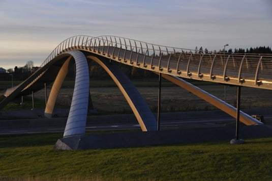
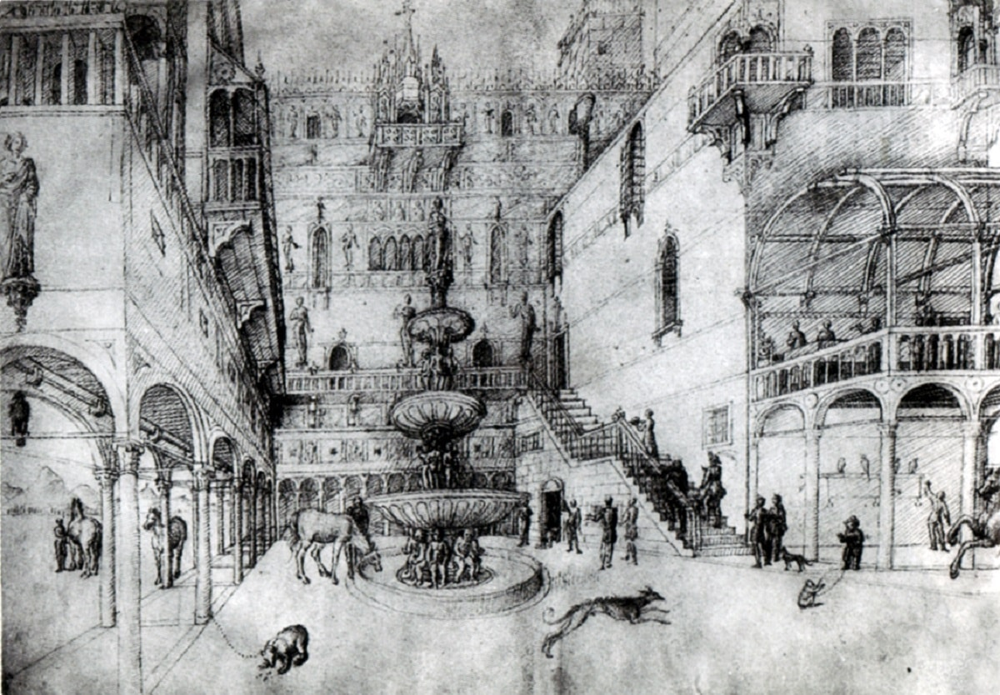

Construcțiile lui Leonardo da Vinci
1. Podul autoportant

Acest pod ingenios este format din bârne de lemn care se susțin singure prin greutatea proprie și prin frecare, fără cuie, frânghii sau mortar. A fost gândit pentru armate, putând fi asamblat și demontat foarte rapid peste râuri.
2. Podul peste Cornul de Aur

Proiectat în 1502 pentru sultanul Baiazid al II-lea din Istanbul, podul avea o singură arcadă uriașă de 240 de metri lungime. Deși nu a fost construit atunci, designul său a fost atât de avansat încât în Norvegia a fost realizată în 2001 o versiune modernă bazată pe aceste planuri.
3. Orașul Ideal

Conceput după epidemia de ciumă din Milano, acest proiect de urbanism propunea străzi largi, curate și sisteme moderne de canalizare. Orașul era împărțit pe două niveluri: sus circulau pietonii, iar jos se desfășura transportul de mărfuri și curgeau canalele cu apă.